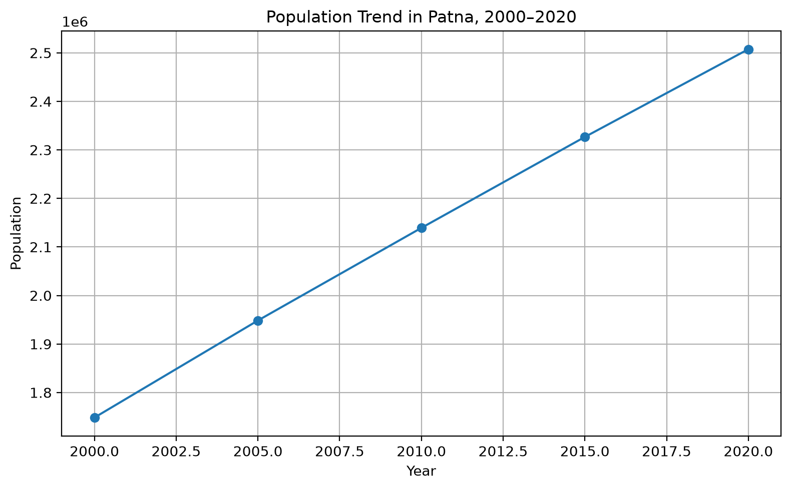

Study Overview
This analysis examines how residential population distribution and total population changed within the Patna Urban Local Body between 2000 and 2020.
Population data were obtained from the JRC Global Human Settlement Layer (GHSL) through Google Earth Engine. The analysis uses population estimates for 2000, 2005, 2010, 2015 and 2020.
2000
1,748,350
2005
1,948,444
2010
2,139,269
2020
2,507,450
Population Distribution Maps
The interactive map below shows the residential population distribution for 2000, 2005, 2010, 2015 and 2020. Use the layer control in the map to switch between years.
Units: Population count represented in the 100 m GHSL population grid.
Population Animation
The five-year animation illustrates the spatial evolution of residential population across Patna between 2000 and 2020.

Population Change Map: 2000–2020
The following map represents the spatial change in population between 2000 and 2020.
Calculation: Population in 2020 − Population in 2000.
Positive values indicate population increase, while negative values indicate population decline.
Population Totals and Trend
Population Totals
| Year | Total Population | Change from Previous Period |
|---|---|---|
| 2000 | 1,748,350 | — |
| 2005 | 1,948,444 | +200,094 |
| 2010 | 2,139,269 | +190,825 |
| 2015 | 2,326,667 | +187,398 |
| 2020 | 2,507,450 | +180,783 |
Population Trend

Discussion
Overall Population Change
Patna experienced continuous population growth between 2000 and 2020. The estimated population increased by approximately 759,100 people, representing a 43.42% increase over the study period.
Five-Year Change
- 2000–2005: +200,094 people
- 2005–2010: +190,825 people
- 2010–2015: +187,398 people
- 2015–2020: +180,783 people
The results show continuous population growth during every five-year period. Although the absolute population continued to increase, the percentage growth between successive periods gradually declined.
Spatial Pattern
The population maps indicate that residential population is not uniformly distributed across Patna. Higher population concentrations are visible in more densely developed parts of the city.
The 2000–2020 change map highlights areas that experienced greater population increases during the study period.
Urban Planning Implications
Population growth can increase demand for housing, transportation, water supply, sanitation, healthcare, education and other urban services.
Areas experiencing stronger population increases may therefore require additional infrastructure and service planning.
Methodology
Boundary
The Patna Urban Local Body boundary was obtained from the Indian Urban Local Body boundary dataset and converted to WGS 84 (EPSG:4326) for use in Google Earth Engine.
Population Data
Population data were obtained from the JRC GHSL Population dataset available in Google Earth Engine. The analysis uses the population_count band at 100 m resolution.
Study Years
The study covers five-year intervals: 2000, 2005, 2010, 2015 and 2020.
Change Calculation
Spatial population change was calculated as:
Population Change = Population 2020 − Population 2000
Limitations
- GHSL provides gridded population estimates rather than household-level population observations.
- The results depend on the selected Patna Urban Local Body boundary.
- GHSL estimates may differ from official population statistics because of differences in geographic boundaries and estimation methods.
- The analysis identifies population change but does not establish the causes of population growth.
- Additional demographic, socioeconomic, housing and land-use data would be required to examine the drivers of population change.
Data Sources
Population Dataset
JRC Global Human Settlement Layer (GHSL) – Population (GHS-POP)
Earth Engine ID:
JRC/GHSL/P2023A/GHS_POP
Band:
population_count
Resolution: 100 m
Years used: 2000, 2005, 2010, 2015 and 2020
Boundary Dataset
Indian Urban Local Body Boundary Dataset – SBM ULBs
The Patna Urban Local Body boundary was selected from the Indian urban boundary dataset.
Software
Google Earth Engine, Python, GeoPandas, geemap, Folium and Matplotlib.